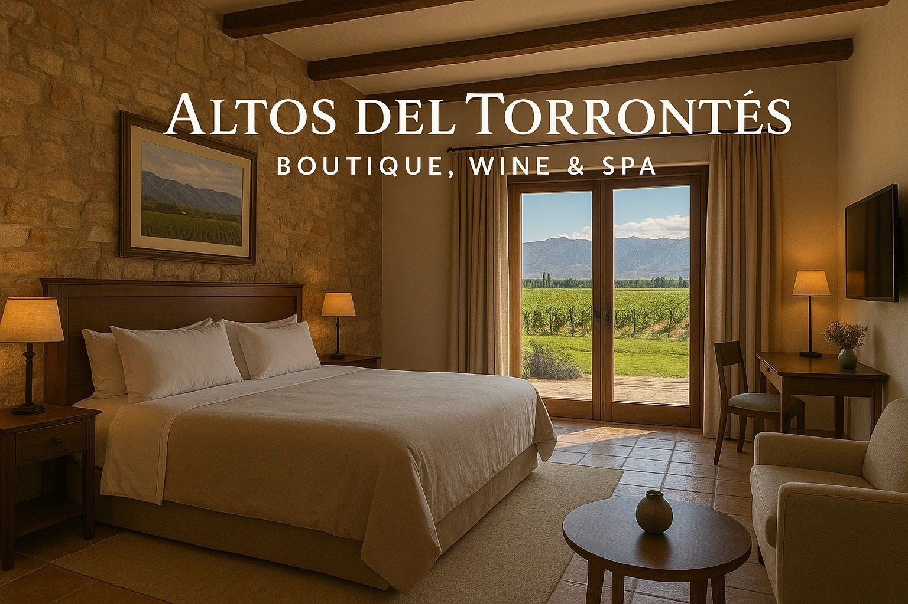
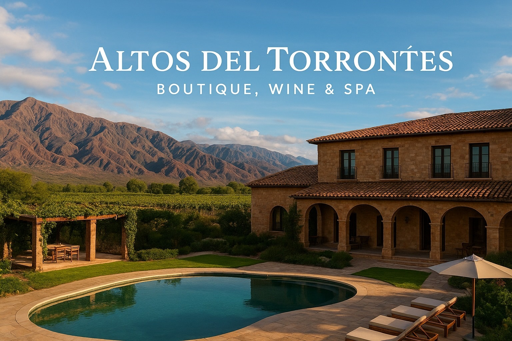
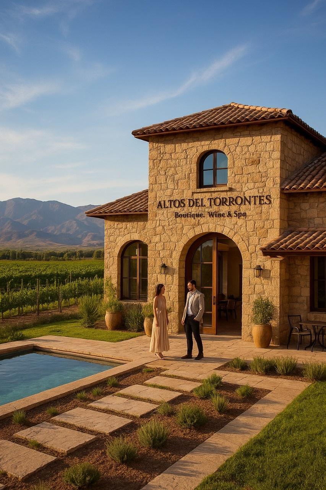

Habitaciones
En Altos del Torrontés, cada habitación combina el encanto del norte argentino con el confort moderno. Los interiores están decorados con materiales nobles, tejidos artesanales y amplios ventanales que permiten disfrutar del imponente paisaje de los Valles Calchaquíes.




Contamos con 15 habitaciones exclusivas, cada una diseñada para ofrecer un ambiente cálido, elegante y relajante. Todas disponen de baño privado, climatización, servicio de habitación y vistas únicas a los viñedos o a las montañas.
Disfrutá de un descanso auténtico con el aroma del vino y el silencio de los Valles Calchaquíes. Nuestro equipo se encargará de que cada detalle haga de tu estadía una experiencia inolvidable.